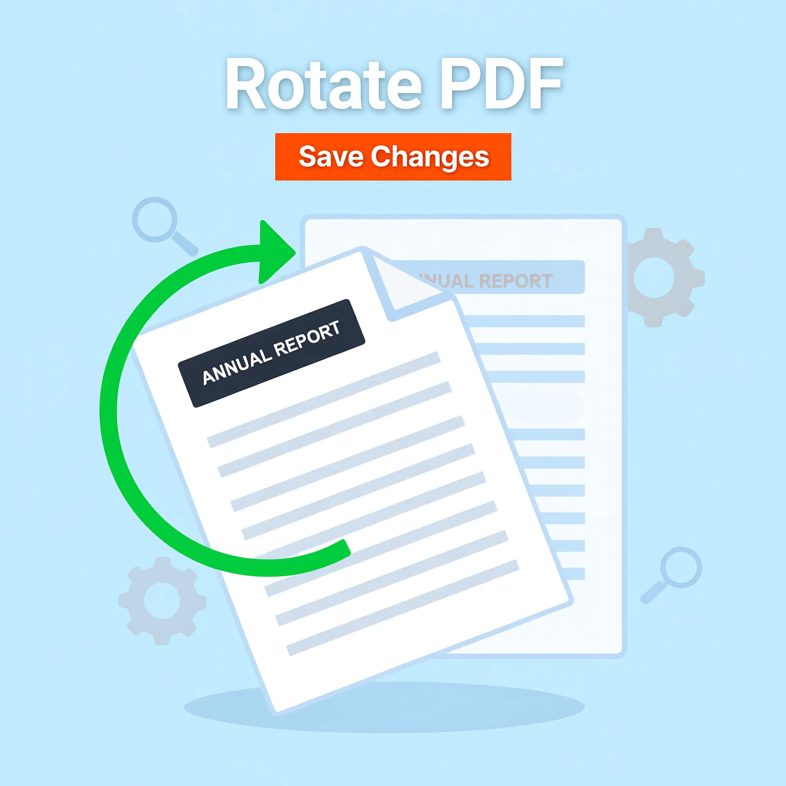

How to Rotate PDF Pages Online Easily — Complete Guide for Fixing Orientation
Fix upside-down or sideways PDF pages instantly with our free online rotation tool. Make your documents readable, professional, and properly aligned in seconds.
Written by JKM Edit Team
Published on May 17, 2026
6 min read

Overview: Why You Need to Rotate PDF
PDF documents are one of the most widespread file types right now. You need and use them everyday. Yet, at time, conundrums occur with PDF files kids have produced with various different applications available, deservedly, and yet still often not always the best ones available. Among the common issues are when facing PDF files that have been badly oriented or have come out upside down.
Specifically:
A scanned PDF is sideways
An PDF is upside down
A mobile-screen-scanned PDF has become rotated wrong-wrong way round
An PDF consisting of portrait and landscape pages is just a bizarre mix of some of the basically wrong ones above
Easy? Easy that extremely tiny mistake is a major problem and makes everyone appear as weaklings and little folk when persevering on it and wishing to have a proper looking PDF pages that can be read and however demonstrate better than the concepts, plans, principles you want to convey to your readers.
You would not anyway anticipate to redownload everything of your PDF or even everything of work completed on editing PDF file from the very beginning. Naturally, that is enough that you redownload badly positioned pages from your PDF and at compact way and quick with just a one special JKM Edit Home task, rotate PDF task. It is not at all a sophisticated task and requires not even any installation onto your PC or device. Simply that can be done on-line without any prior installation.
What is a PDF Rotate Task?
Rotate one or many PDF file pages by any PDF rotate tool.
Example
90° rotation to redownload a PDF file that is saved on side
180° rotation to redownload a PDF file that is saved upside down
Make sure your documents are facing the right way up
Issues When PDFs Are Upside Down
1. Scan Documents Furiously
Optical document scanners excel on phones, but receipts and landscape documents are getting rotataed pages and sideways documents.
2. Hard To Read
Rotated text is unpleasant, confusing, and super slow read times because you have to shift head-or-device to read palindrome text.
3. Looks Unprofessional
Badly or crudely scanned pages look ugly and can waste your time in the mail room and with your recruiter overlooking an upside-down resume.
4. Wrong Side Printing
Rotated documents can be printed wrong-side-up, text can be cut off at printing edges, and you are wasting printer paper.
The Value of Spinning Your PDFs
Easy Reading
Experiential reading comfort is much better when you properly orient your PDFs.
Professional Design
Pages can look clean and organized when properly oriented PDF documents are ready to be submitted.
Convenient Sharing
Your document comes ready for the recipient to read; no more rigmarole for them to perform.
Properly Printed
Your document is printed correctly with properly oriented pages, saving ink, time, and money.
People Prefer Online PDF Rotate Tools
This is normally expensive software, installation, manual work, and sometimes technical skills.
However online tools are in-land instant and online usage. They are browser based and no installation is needed, very fast and mobile friendly. That empowers everyday people to fix documents.
Rotate PDF with One Click With JKM Edit
1. User Friendly Tool
The JKM Edit Rotate PDF Tool is for all. Just Upload your PDF file. Pick up the pages to rotate, Select the direction to rotate, Download the final file. No special skill.
2. Browser based Tool
The JKM Edit Rotate PDF Tool works well on The desktop laptop, android iPhone devices, and tablets. No install is required
3. Rotate Usefully
You have full control with tool. You could rotate one page or with some of the multiple pages the full PDF file with one click.
4. Minimum Delay To See the Orientation
You could fix the document orientation and see the view at the same time.
5. Process Instantly
Everything is rotated with your screen. It is instant rotation.
6. Free and easy
JKM Edit is designed to be straightforward and swift with providing key productivity applications to the entire world.
Rotate your sideways document instantly!
Single pages or the whole PDF file just one click.
Other Information: How To Rotate PDF With JKM Edit Step by Step
Step 1, Open the tool
Go to official link 👉 JKM Edit Rotate PDF Tool
Step 2, Upload your float PDF file
Take your PDF file from your device. News report, assignment or official forms.
Step 3, Choose pages you want to rotate
To fix the PDF file with wrong text angle, which can't read clearly. It is either counterclockwise or clockwise. Just move the exact pages being wrong. You can do that one by one, or a custom range, or all.
Step 4, Choose rotation direction
Choosing a correct sloped: 90° clockwise, 180° flip (from upside down to upright stance), 270° counter clockwise
Step 5, Execute the Rotation
Execute and wait a bit.
Step 6, Download the Fixed PDF
Your readable and well aligned document ready to be downloaded instantly.
Instant pdf rotation: Common examples from many categories
Students
scanned homework assignments
handwritten lecture notes
digital project files portfolio
Businesses
scanned invoices
financial statements
legal agreements
Government
application form
scanned ID cards, Passports
official documents
Office
digital meeting notes
rescan listed document
regular documents
Rotate pdf file with wireless Mobile phone
The Power of Editing with JKM Editor over the traditional software
Specification
Traditional Software
JKM Edit
Installability Required
Yes
No
User Friendliness
Advanced
Simple
Speed
Medium
Fast
Mobile Compatibility
Limited
Full
Browser based Access
No
Yes
Selection of the Page
Manual & tedious
Easier Visual Click
Preservation of Privacy
Names and passwords in Html and pdf Files. You often deal with hugely personal documents, bank transactions, official reports, and do you have to do everything in a JKM Edit browser-based application? Jkm Edit focuses on usability and convenience: JKM Edit operations in your browser so you will have a peace mind during your useful operations.
Why fast fixing is important
We want instant fixing today. Easy to use workflow. No delays! What is a slow, clunky solution that decreases your productivity, but increases your frustration?!
Mobile PDF rotation usage is increasing
We all scan now using our phones. You scan with a wrong orientation, or you rotate guess what while the phone was moving. JKM Edit lets you fix it instantly from your phone before send the mail.
Best practices
Always preview before download: make sure the all pages are oriented in a logical, readible flow.
Only rotate the pages that you need: if page 3 is a bad page, just rotate that. Don't rotate everything like a blanket 90 or 180 degree rotation
Check double: a landscape chart should be turned landscape, but a portrait word processing doc should still be reading correctly
Don't repeat yourself: you have your eyes. Fix all your orientation issues in one go, saving precious time and sanity
Future of PDF editing tools
Design possibilities of the future…Page turn + or + without other images…more features that automatically detect upside down text, more intelligently scan and integrate real time visual editing into web browsers :)
Frequently Asked Questions (FAQs)
Yes, using modern online tools like JKM Edit, you can rotate your PDF documents completely free without hidden fees or subscriptions.
Yes, you can choose to rotate a single page, multiple specific pages, or the entire document based on your needs.
Absolutely. The JKM Edit Rotate PDF tool is fully browser-based and works seamlessly on any Android, iPhone, or tablet device.
No, rotating a PDF only changes its orientation metadata. The tool maintains the original resolution, text clarity, and overall quality of your document.
Overall Verdicts
PDF rotation may be a small but important tool, to render a document looking good, professional, and well structured. Rotating PDFs can instantly fix many common layout/scan issues.
Instead of wasting valuable human hours carefully rescanning paper copies, you can use the JKM Edit Rotate PDF Tool to rotate PDFs and rotate page orientation.
JKM Edit is a fast, simple, easy to use, web-browser based product which lets you instantly rotate PDFs for all the people.
Instantly rotate PDFs
Without reading sideways? Instantly change the orientation of your PDF files. Click on the page, select the orientation you prefer and securely download it in seconds.